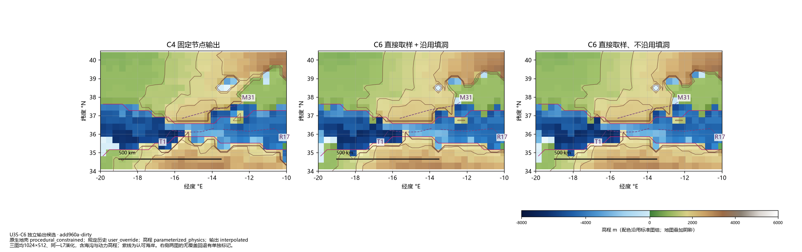
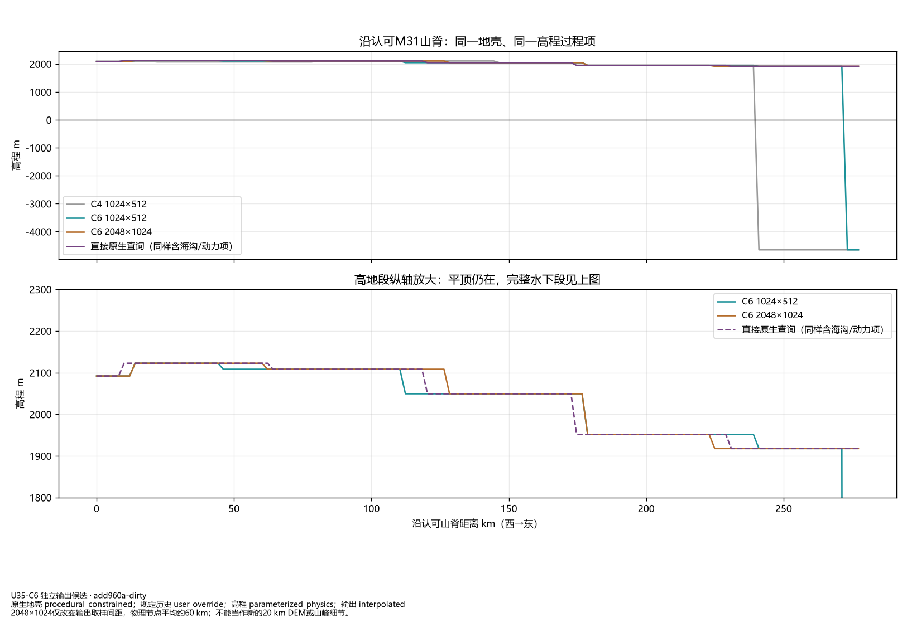
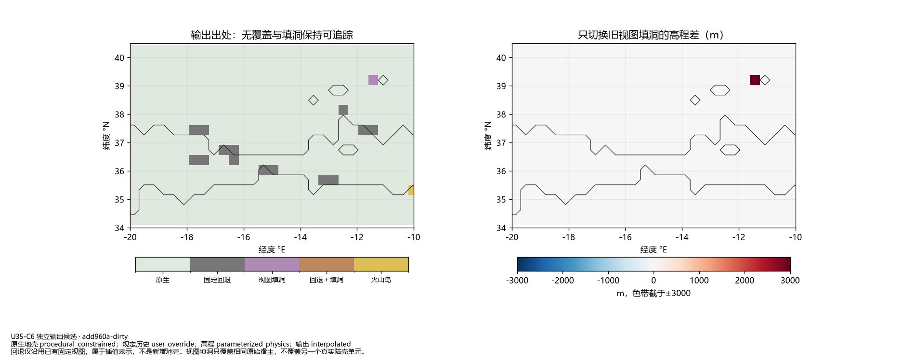
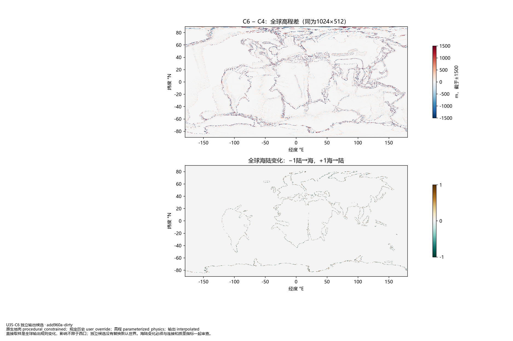
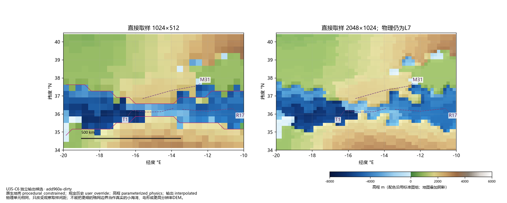
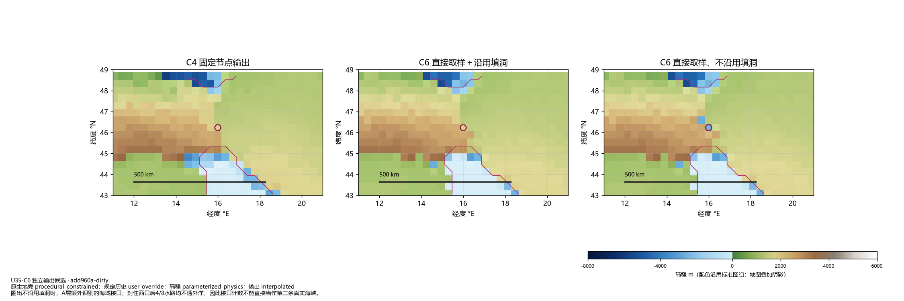

同一C4演化，直接查询移动地壳单元；物理分辨率仍为L7。默认世界未更换。
| 候选 | A全过 | 水路4/8连通 | 末端水下km | 回退面积% |
|---|---|---|---|---|
| native_fill_1024x512 | True | True/True | 6.0 | 0.599 |
| native_raw_1024x512 | True | True/True | 6.0 | 0.599 |
| native_fill_2048x1024 | True | True/True | 0.0 | 0.596 |
| native_raw_2048x1024 | True | True/True | 0.0 | 0.596 |





